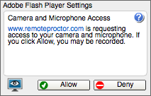

The authentication process requires the use of an up-to-date version of the Adobe Flash Player plugin. If it is not installed, you will be promped with an alert with instructions to retrieve it. Restart of Remote Proctor will be required in order to continue.
If the appropriate version of flash is installed, the user must allow the Flash component access to the camera and microphone. Select Allow when the following image appears:

Should the user accidentally select Deny, they will need to select the home page link in the top left corner and start over.
The authentication process goes through several steps before allowing you into the exam. The instructions to perform these steps are provided on the page. These steps include:
Upon completion of the authentication process, you will be presented with a message indicating that you will have a limited amount of time to locate and enter your exam.